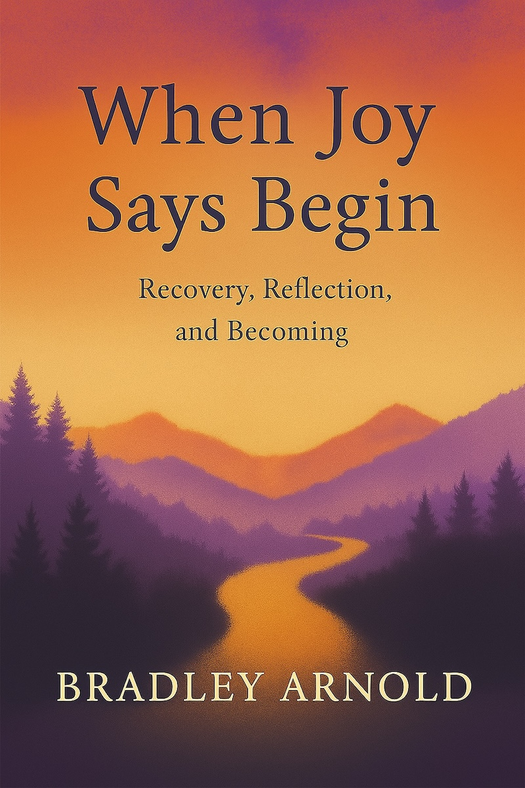
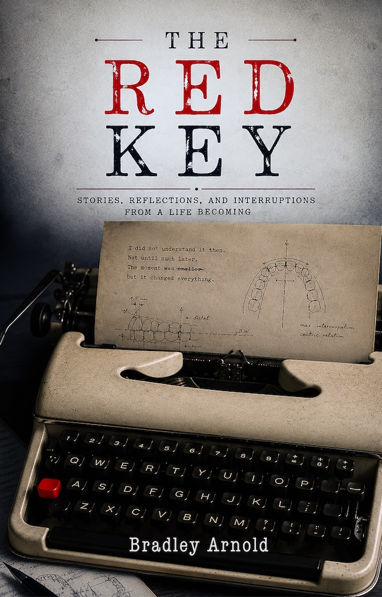

Sobriety
Learning to live without alcohol and recognizing that I could no longer rely on it to manage my experiences.
An Ongoing Conversation About Being Human
Learning not simply to survive, but to participate in life.
I had my last drink on November 22, 2021. My journey into recovery continues to unfold.
I entered recovery believing that alcohol was my problem. What I gradually discovered was that alcohol had been a symptom of something much deeper: codependency.
Recovery has become an exploration of truth, identity, relationships, acceptance, spirituality, and the joy of being alive. It has challenged many of the assumptions I held about myself and the ways I had learned to participate in life.
I share these writings not as someone who has mastered recovery, but as someone who continues to practice it.
This part of the website continues to grow. I will be adding personal reflections, meeting shares, writings about the Twelve Steps, and resources that have contributed to my recovery. You are welcome to explore what is here and return as the conversation continues.
Putting down the drink was an essential beginning. But removing alcohol from my life did not automatically change the person who had been drinking.
Many of the fears, habits, expectations, and ways of responding to life that had accompanied my drinking remained with me. Some had been part of my life long before alcohol entered it.
Learning to live without alcohol and recognizing that I could no longer rely on it to manage my experiences.
Examining the patterns, fears, beliefs, and behaviors that had shaped my relationship with myself, other people, and life.
Learning to translate understanding into action, rather than mistaking insight for meaningful change.
Discovering the pleasure of participating in life without continually needing to control, escape, or justify my experiences.
These are not separate stages that I complete and leave behind. They remain interconnected parts of my daily life.
One of the most significant discoveries of my recovery was recognizing the extent to which codependency had shaped my life.
My need for approval, my desire to be needed, my difficulty accepting myself, and my attempts to establish my worth through accomplishments and relationships were not simply consequences of drinking.
They were patterns that had developed over many years. Alcohol had become one of the ways I managed the difficulties associated with them.
Recognizing these patterns has required me to reconsider not only my drinking, but also many of the beliefs I held about love, independence, responsibility, success, and my own identity.
This discovery has also helped me appreciate the difference between codependency and healthy interdependence. I do not need to live in isolation, nor do I need to establish my worth through another person's approval.
I am learning that giving and receiving support can be expressions of connection, rather than attempts to establish or protect my identity.
Many of my recovery writings begin with something I am struggling to understand. Sometimes an experience, a conversation, or a meeting introduces a question I had not previously considered.
Writing helps me explore those questions. Practicing what I discover is often considerably more difficult.
I am learning that telling the truth and being truthful with myself are not necessarily the same thing. Honesty requires a willingness to reconsider my own explanations.
Learning to recognize my value without continually needing to establish it through achievements, approval, or the expectations of others.
Discovering how to appreciate, care for, and support other people without losing sight of myself or their independence.
Understanding recovery, talking about recovery, and practicing recovery are different experiences.
Learning to reconsider the familiar beliefs and behaviors I have sometimes protected, even when they have caused pain.
Accepting that my own understanding is limited and that other people may recognize things I cannot yet recognize in myself.
Recognizing that although I cannot control every experience, I can work on how I respond to those experiences.
Learning to experience emotions without automatically returning to familiar patterns of avoidance, defensiveness, or control.
Rediscovering the pleasure of ordinary experiences without needing every moment to become an accomplishment.
A framework for discovery and daily practice.
The Twelve Steps have gradually become much more to me than a program for remaining sober.
They provide opportunities to examine my relationship with reality, myself, other people, and the experience of living.
As an atheist, I have developed personal ways of understanding the Steps that allow me to practice them without adopting religious beliefs.
The following themes reflect my evolving personal interpretation. They are not intended to replace the traditional Steps or prescribe how anyone else should understand them.
Truth
The Joy of Life
Trusting Spiritual Resources
Self-Examination
Honesty and Sharing
Willingness
Humility and Letting Go
Recognizing Our Impact
Making Amends
Continuing Awareness
Connection and Reflection
Sharing and Practicing
I do not consider these to be twelve accomplishments that I can eventually complete. They are opportunities for continuing awareness, reflection, connection, and practice.
Life itself as a higher power.
Being an atheist has not prevented me from developing a spiritual understanding of recovery.
What it has required is that I examine what words such as spirit, spirituality, surrender, faith, and higher power actually mean to me.
I have gradually come to understand spirituality through my relationship with life itself.
I do not need to believe in a supernatural being to appreciate the extraordinary experience of being alive, or to recognize that my existence depends upon much that is beyond my understanding and control.
The experience of existence itself, and the opportunity to participate in it.
The breath of life and my awareness of being part of the living world.
The people, experiences, knowledge, and practices that help me live more fully and honestly.
Fellowship, professional guidance, nature, silence, music, creativity, friendship, compassion, and reflection are all important resources in my life.
My understanding of spirituality is not something I expect others to adopt. Each of us brings different experiences, beliefs, and questions to recovery. Those differences can enrich our conversations.
AA Agnostica has provided an opportunity for me to share my experiences and developing understanding of secular recovery with a wider community.
These four articles were published during February and March 2026. Read together, they reflect the continuing development of my understanding of recovery, spirituality, trust, and practice.
February 8, 2026
Choosing life.
A secular exploration of higher power, spirit, and the first three Steps, including the distinction between life itself and the resources that help me experience it.
Read the ArticleFebruary 22, 2026
Learning to trust.
A reflection on Steps Three through Five and the difference between intellectually accepting surrender and practicing trust and vulnerability with other people.
Read the ArticleMarch 8, 2026
Moving beyond survival.
An exploration of identity, healthy interdependence, the challenges of ordinary life, and discovering moments of joy beyond the experience of addiction.
Read the ArticleMarch 22, 2026
Moving from understanding to action.
An examination of selective listening, intellectual resistance, and the difficulty of acting upon guidance that challenges my understanding of myself.
Read the ArticleI have submitted three articles to AA Grapevine, exploring aspects of my personal experiences and recovery.
None of these articles has been published as yet. Further information will be added here as their publication status becomes known.
My two recovery books approach the experience of codependency, recovery, and living from different directions.

Discovering what recovery means.
Personal reflections on the Twelve Steps, the discovery of codependency, secular spirituality, and learning to participate more fully in life.
Explore the Book
Discovering how I became who I was.
A memoir exploring childhood, identity, relationships, experiences, and the development of the patterns I eventually recognized as codependency.
Explore the BookOne book looks forward through recovery. The other looks backward through memory. Both are concerned with the possibilities of living.
An expression of gratitude to the fellowship of recovery.
Neither my recovery nor my recovery writings would have been possible without the people I have encountered along the way.
Through their willingness to share their experiences, struggles, discoveries, laughter, and hope, they have helped me discover things about myself and about living that I might never have discovered alone. Much of what I have written grew out of those encounters.
Although my name appears on the covers of these books, many people have unknowingly contributed to the words inside them.
I do not feel that people in recovery should have to pay to read about experiences and discoveries that their fellowship helped make possible.
Offering complimentary copies of When Joy Says Begin and The Red Key is one small way of expressing my gratitude, giving something back, and continuing to participate in the fellowship of recovery.
If you are in recovery and would like to receive either or both of these books, please contact me. I would appreciate knowing just a little about you:
You do not need to explain your financial circumstances, provide proof of recovery, or share anything about your personal experiences that you are uncomfortable sharing.
There is no minimum length of recovery required, nor is membership in any particular recovery program necessary.
You may also contact me directly at info@bradleyarnold.info .
I will treat the personal information you share as strictly confidential. It will be used only to respond to your request and arrange for you to receive the books.
I will not publish your information, use it for promotional purposes, or voluntarily share it with others without your permission. Please remember that ordinary email is not necessarily a secure means of communication. Share only what you feel comfortable sharing.
These books reflect my personal experiences, discoveries, and understanding of recovery. They are not intended as professional medical or psychological advice, nor as a substitute for treatment or professional support.
There is no obligation to purchase anything, write a review, make a donation, or agree with my perspectives.
The books are simply a gift.
It is my hope that somewhere within these pages you might discover something that contributes to your own experience of recovery, living, and joy.
Recovery has helped me rediscover experiences that do not need to be about recovery.
Reading a book, listening to music, dancing, painting, writing a story, enjoying the company of an animal, sharing a meal, or simply noticing something beautiful can be worthwhile experiences in themselves.
Joy does not mean that every day is easy or that difficulties have disappeared. I continue to experience uncertainty, sadness, fear, and disappointment.
But I am learning that those experiences do not diminish the value of being alive or eliminate the possibility of joy.
Exploring experiences and ideas through stories, essays, poetry, and personal reflections.
Explore the WritingsDiscovering different ways of experiencing memories, imagination, and the beauty of the living world.
Explore the ArtworkContinuing to discover, question, teach, learn, and appreciate the many possibilities of life.
Teaching and LearningRecovery does not have to be experienced in isolation.
Fellowship, professional support, literature, friendship, shared experiences, and personal reflection have all contributed to my understanding and practice of recovery.
Different people discover different resources that help them. These links offer several possible starting points for further exploration.
Information about AA, its literature, meetings, and the fellowship of recovery from alcoholism.
Visit AAAn extensive archive of secular recovery writings, alternative interpretations of the Steps, and personal experiences.
Explore the ArchiveFellowship and resources for people seeking healthier relationships with themselves and others.
Visit CoDAPersonal stories, experiences, literature, and reflections from members of the AA fellowship.
Visit AA GrapevineThis is a personal website. It is not affiliated with or endorsed by Alcoholics Anonymous, Co-Dependents Anonymous, or the other organizations listed here.
My writings reflect my personal experiences and are not intended to replace qualified medical, psychological, or other professional support.
I welcome thoughtful correspondence from people interested in recovery, secular spirituality, codependency, writing, and the experience of living.
We do not need to share the same experiences, beliefs, or understanding of recovery to learn from one another.
You may contact me at info@bradleyarnold.info .
I do not consider recovery a finished accomplishment.
It is part of my life.
And it is life itself that I am learning to experience.